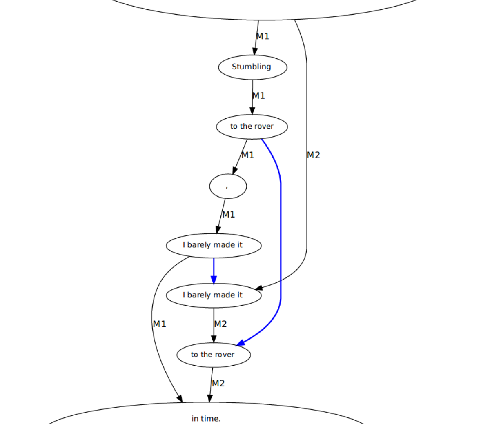

<!doctype html>
<html lang="en">
<head>
<meta charset="utf-8">
<title>Close/Machine-Reading</title>
<meta name="author" content="Christof Schöch">
<meta name="description" content="Slides">
<meta name="apple-mobile-web-app-capable" content="yes">
<meta name="apple-mobile-web-app-status-bar-style" content="black-translucent">
<meta name="viewport" content="width=device-width, initial-scale=1.0, maximum-scale=1.0, user-scalable=no, minimal-ui">
<link rel="stylesheet" href="css/reveal.css">
<link rel="stylesheet" href="css/theme/simple.css" id="theme">
<link rel="stylesheet" href="lib/css/zenburn.css">
<script>
var link = document.createElement( 'link' );
link.rel = 'stylesheet';
link.type = 'text/css';
link.href = window.location.search.match( /print-pdf/gi ) ? 'css/print/pdf.css' : 'css/print/paper.css';
document.getElementsByTagName( 'head' )[0].appendChild( link );
</script>
<!--[if lt IE 9]>
<script src="lib/js/html5shiv.js"></script>
<![endif]-->
</head>

<body>
<div class="reveal">
<div class="slides">
<section data-markdown="" data-separator="^\n---\n" data-separator-vertical="^\n--\n" data-charset="utf-8">
<script type="text/template">

<!--  vvvvv THIS IS WHERE THE CONTENT GOES! vvvvvvv  -->

## Toward a Methodology for Detecting and Classifying Edits in Variants of Fiction. Test Case: Andy Weir's *The Martian*
<hr/>
<br/>
<br/>
<br/>
<small>[Erik Ketzan](http://www.bbk.ac.uk/arts/research/research-students/english-and-humanities/erik-ketzan) (Birkbeck, London) &nbsp; · &nbsp; [Christof Schöch](http://www.christof-schoech.de/en) (Würzburg Univ.)</small>
<br/>
<hr/>
<br/>
<br/>
<small>Digital Humanities Conference 2017, Montréal, 8.-12. August 2017<br/><br/>slides: https://christofs.github.io/martian/<br/>DOI: [10.5281/zenodo.841358](https://doi.org/10.5281/zenodo.841358)
</small>


---
# Overview
<br/>
* [Introduction](#/2)
* [Methods and Results](#/3)
* [Conclusion](#/4)


---
# Introduction


--


* 2011: self-published online (=Martian1)
* 2014: published with Crown Publishing (=Martian2)
* 2015: Hollywood film


--
## Aims
<br/>
* to identify what changed between the two variants of _The Martian_
* to propose a methodology for detecting and classifying edits in variants of fiction
<br/>
<br/>(see [earlier work](#/4/3))


--
## Hypotheses
<br/>
* The Martian is unusual in being a bestselling work of science fiction <!-- .element: class="fragment" data-fragment-index="1" -->
* Martian2 becomes more "mainstream", i.e. socialised, domesticated, appealing to a general audience. <!-- .element: class="fragment" data-fragment-index="2" -->
* The edit aligns the text with stylistic features commonly found in bestsellers (Archer and Jockers): <!-- .element: class="fragment" data-fragment-index="3" -->
    * scenes of human interaction and relationships
    * low amount of offensive content
    * highs and lows of sentiment


---
# Methods and Results

--
## _Martian_ 1 and 2
<br/>
Andy Weir: "The editing process was pretty smooth.<br/>It was not a lot of changes at all" (2015)
<br/>
<br/>
 <!-- .element: class="fragment" data-fragment-index="1" -->

--
## Basic collation


--
### Words added, removed or changed


--
## Automatic classification of edits

--
###Breakdown by category

script-identifiable (blue) vs. other edits (red)

--
###Breakdown of script-identifiable edits


--
###Breakdown of other edits


--
## Cumulative Effect of the Script-Identifiable Copyedits

--
### Numbers and abbreviations


--
## Close Reading of Other Edits

--
### Reduction of profanity
<br/>
* Crude and sophomoric humor is cut in key instances <!-- .element: class="fragment" data-fragment-index="1" -->
* Words like “fuck” and “shit” are substantially reduced (33%, 15%) <!-- .element: class="fragment" data-fragment-index="2" -->
* Or, profanity is softened: <!-- .element: class="fragment" data-fragment-index="3" -->
    * "fuck it" > "screw it" <!-- .element: class="fragment" data-fragment-index="4" -->
    * "a fuckload of" > "a lot of" <!-- .element: class="fragment" data-fragment-index="5" -->
    * "fucker" > "bastard" <!-- .element: class="fragment" data-fragment-index="6" -->
    * "a trailer for all the shit I have to bring" > "my cargo trailer" <!-- .element: class="fragment" data-fragment-index="7" -->

--
### Watney's emotions
<br/>
* Martian1:
    * relatively little about Watney’s emotions or inner world
* Martian2:
    * Watney expresses significantly more emotion:
    * misses his family and friends more
    * expresses despair, loneliness, and introspection more.
* (This aligns with Archer/Jockers)

--
## Detecting transpositions with CollateX

--
### Results
<br/>

| type                    | count |    % |
|-------------------------|------:|-----:|
| punctuation             |    28 |  22% |
| single words            |    43 |  34% |
| multi-word expressions  |    55 |  44% |
| entire sentences        |     0 |   0% |
| **total**               |   126 | 100% |

<br/>(Using CollateX; see Dekker and Middell 2011 and http://dragonfly.hypotheses.org/954; [example](#/5/2))

--
## Edits Over the Course of the Novel


--
### [Levenshtein distance](#/5/1) over textual progression
<a href="img/progression.png"></a>
<small>(red = script-identifiable edits; blue = other edits)</small>

---
# Conclusion

--
### Method
<br/>
* identify edits (wdiff) <!-- .element: class="fragment" data-fragment-index="1" -->
* classify them (typology; Python) <!-- .element: class="fragment" data-fragment-index="2" -->
* close-read and describe the "other" edits <!-- .element: class="fragment" data-fragment-index="3" -->
* check for transpositions (Collatex) <!-- .element: class="fragment" data-fragment-index="4" -->
* patterns in textual progression (Python) <!-- .element: class="fragment" data-fragment-index="5" -->
* next steps: further automate the process <!-- .element: class="fragment" data-fragment-index="6" -->


--
### The Martian
<br/>
* edits align The Martian more with features <br/>overrepresented in bestsellers <!-- .element: class="fragment" data-fragment-index="1" -->
* many small, few larger edits (e.g. no transpositions) <!-- .element: class="fragment" data-fragment-index="2" -->
* edits were applied quite consistently throughout <!-- .element: class="fragment" data-fragment-index="3" -->
* the editor was polishing rather than rewriting the novel <!-- .element: class="fragment" data-fragment-index="4" -->
* next steps: POS, syntax, sentiments, legal issues <!-- .element: class="fragment" data-fragment-index="5" -->


--
### Thank you!
slides: https://christofs.github.io/martian/
<small>

**References**

* Archer, J. and Jockers, M. (2016). The Bestseller Code. New York: Saint Martin's Press.
* Dekker, R. and Middell, G. (2011). "Computer-Supported Collation with CollateX". SDH 2011. University of Copenhagen, Denmark. 17-18 November 2011.
* Eve, M. P. (2016). "'You have to keep track of your changes': The Version Variants and Publishing History of David Mitchell's Cloud Atlas", OLH. https://olh.openlibhums.org/article/10.16995/olh.82/
* Greetham, D. (1992). Textual scholarship: An introduction. New York/London: Garland Publishing.
* Ho, Y. (2011). "Corpus Stylistics in Principles and Practice: A Stylistic Exploration of John Fowles’ The Magus. New York: Continuum.
* Hunt, J. W. & Mcilroy, M. D. (1975). An algorithm for differential file comparison. Computer Science.
MLA (2011). Reports from the MLA Committee on Scholarly Editions, Guidelines for Editors of Scholarly Editions.
* Navarro, G. (2001). "A guided tour to approximate string matching". ACM Computing Surveys. 33 (1): 31–88. doi:10.1145/375360.375365.
* Schöch, C. (2016). "Detecting Transpositions when Comparing Text Versions using CollateX". The Dragonfly’s Gaze. http://dragonfly.hypotheses.org/954
* Stockwell, P. (2000). The Poetics of Science Fiction. New York and Oxon: Routledge.
* TEI-L (2016). Types of Edits. TEI-List. http://tei-l.970651.n3.nabble.com/Types-of-edits-tp4028495.html
* van Hulle, D. (2008). _Manuscript Genetics, Joyce’s Know-How, Beckett’s Nohow_. Gainesville: University Press of Florida.
* Weir, A. (2011). _The Martian_. Self-published.
* Weir, A. (2014). _The Martian_. New York: Crown Publishing Group.

</small>


--
<br/>
<br/>
<br/>
<br/>
<br/>
<small>Erik Ketzan and Christof Schöch, 2017</small>
<br/>
<small>https://christofs.github.io/martian/<br/></small>
<br/>
<br/>
<br/>
<a href="https://creativecommons.org/licenses/by/4.0/">CC-BY 4.0</a>
<br/>


---
# Extra slides

--
### Levenshtein distance?
<br/>

|1|2|3|4|5|6|7|8|9|10|
|-|-|-|-|-|-|-|-|-|-|
|-|-|M|A|R|T|I|A|N|S|
|S|A|M|A|R|I|T|A|N|-|

<br/>
* 2 insertions
* 2 substitions
* 1 deletion
* = Levenshtein distance of 5


--
### Transposition (example)
<br/>
<a href="img/transposition_chapter14-2_v2.png"></a>


<!--^^^^^^^ DON'T TOUCH UNLESS YOU KNOW WHAT YOU'RE DOING :-) ^^^^^^^-->

</script>
</section>
</div>
</div>

<script src="lib/js/head.min.js"></script>
<script src="js/reveal.js"></script>
<script>
// Full list of configuration options available at:
// https://github.com/hakimel/reveal.js#configuration
Reveal.initialize({
    controls: true,
    progress: true,
    history: true,
    center: true,
    transition: 'slide', // none/fade/slide/convex/concave/zoom
    // Optional reveal.js plugins
    dependencies: [
        { src: 'lib/js/classList.js', condition: function() { return !document.body.classList; } },
        { src: 'plugin/markdown/marked.js', condition: function() { return !!document.querySelector( '[data-markdown]' ); } },
        { src: 'plugin/markdown/markdown.js', condition: function() { return !!document.querySelector( '[data-markdown]' ); } },
        { src: 'plugin/highlight/highlight.js', async: true, callback: function() { hljs.initHighlightingOnLoad(); } },
        { src: 'plugin/zoom-js/zoom.js', async: true },
        { src: 'plugin/notes/notes.js', async: true }
        ]
    });
</script>
</body>
</html>
